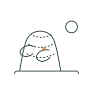
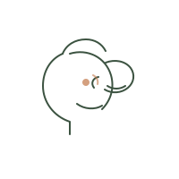
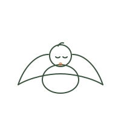
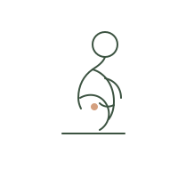
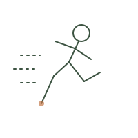
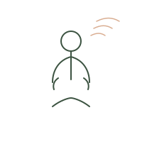

Behandelingen
Voor elk lichaam, op elke leeftijd
Osteopathie is geschikt voor uiteenlopende klachten — van acute pijn tot terugkerende spanningen. Hieronder lees je waar we je mee kunnen helpen.

Rug-, nek- & gewrichtsklachten
De meest voorkomende reden om een osteopaat te bezoeken. We onderzoeken hoe je hele lichaam beweegt en behandelen niet alleen de plek van de pijn, maar ook onderliggende oorzaken.
- Lage rugpijn & spit
- Nek- & schouderklachten
- Hernia (klachten)
- Whiplash
- Artrose & gewrichtsstijfheid
- RSI & overbelasting

Hoofdpijn, kaak & duizeligheid
Spanning in de nek, kaak of het hoofd kan leiden tot terugkerende hoofdpijn of een licht gevoel in het hoofd. Door spanning los te maken, ontstaat vaak merkbare verlichting.
- Spanningshoofdpijn
- Migraineklachten
- Kaakklachten (TMD)
- Duizeligheid
- Tandenknarsen
- Oorsuizen (gerelateerd)

Baby's & kinderen
Een bevalling is een hele krachtsinspanning — ook voor de baby. Met zeer zachte technieken, speciaal afgestemd op het kleine lichaam, ondersteunen we een goede start.
- Voorkeurshouding
- Veel huilen / krampjes
- Voedingsproblemen
- Verstoorde slaap
- Groeipijnen
- Houding & motoriek

Zwangerschap & herstel na de bevalling
Tijdens en na de zwangerschap verandert je lichaam ingrijpend. Osteopathie kan helpen bij het verlichten van klachten en het ondersteunen van herstel.
- Bekken- & bekkenbodemklachten
- Lage rugpijn tijdens zwangerschap
- Herstel na keizersnede
- Houdingsklachten
- Vermoeidheid
- Voorbereiding op de bevalling

Sport & blessurepreventie
Sporters belasten hun lichaam vaak eenzijdig. We helpen bij herstel na een blessure, maar kijken ook naar bewegingspatronen om herhaling te voorkomen.
- Spier- & peesblessures
- Enkel- & knieklachten
- Overbelastingsklachten
- Herstel na blessure
- Bewegingsanalyse
- Preventief onderhoud

Stress, vermoeidheid & ademhaling
Langdurige stress uit zich vaak lichamelijk: een opgejaagd gevoel, oppervlakkige ademhaling of buikklachten. Osteopathie kan helpen om weer tot rust te komen.
- Spanningsklachten
- Vermoeidheid
- Ademhalingsklachten
- Spijsverteringsklachten
- Slaapproblemen
- Algeheel welzijn
Veelgestelde vragen
Goed om te weten
Nee, je kunt zonder verwijzing direct een afspraak maken. Sommige zorgverzekeraars vragen wel om een verwijzing voor (gedeeltelijke) vergoeding — check dit vooraf bij je verzekeraar.
De meeste zorgverzekeraars vergoeden osteopathie geheel of gedeeltelijk vanuit de aanvullende verzekering. Op onze tarievenpagina lees je hier meer over.
Nee. We werken met zachte, manuele technieken. Soms voel je tijdens of na de behandeling lichte spierpijn, vergelijkbaar met na een training — dit verdwijnt meestal snel.
Dit verschilt per persoon en klacht. Vaak is na 1 tot 3 behandelingen al merkbaar verschil. Na de eerste afspraak geven we een inschatting van het verdere traject.
Ja, zeker. We gebruiken bij baby's en kinderen zeer lichte druk, speciaal afgestemd op hun lichaam. Dit is volledig veilig en vaak verrassend effectief.
Twijfel je of osteopathie kan helpen?
Neem gerust contact op — we denken graag met je mee, ook als je nog niet zeker weet of een afspraak passend is.